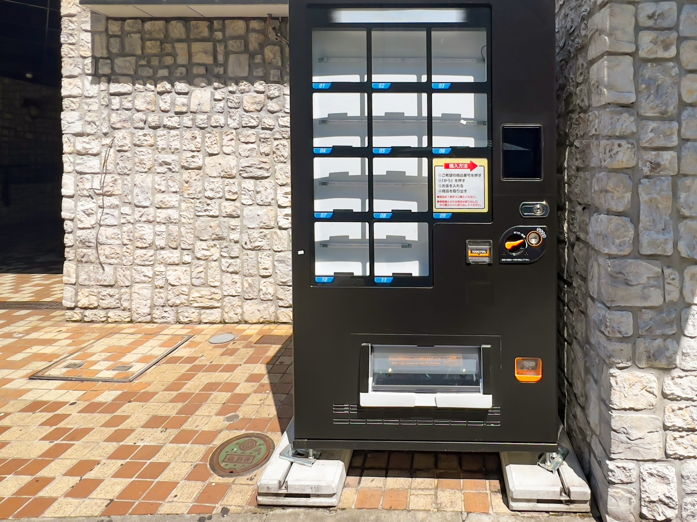
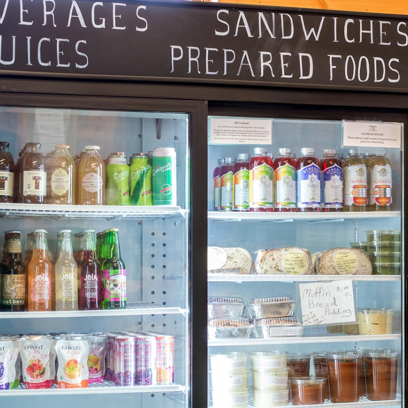
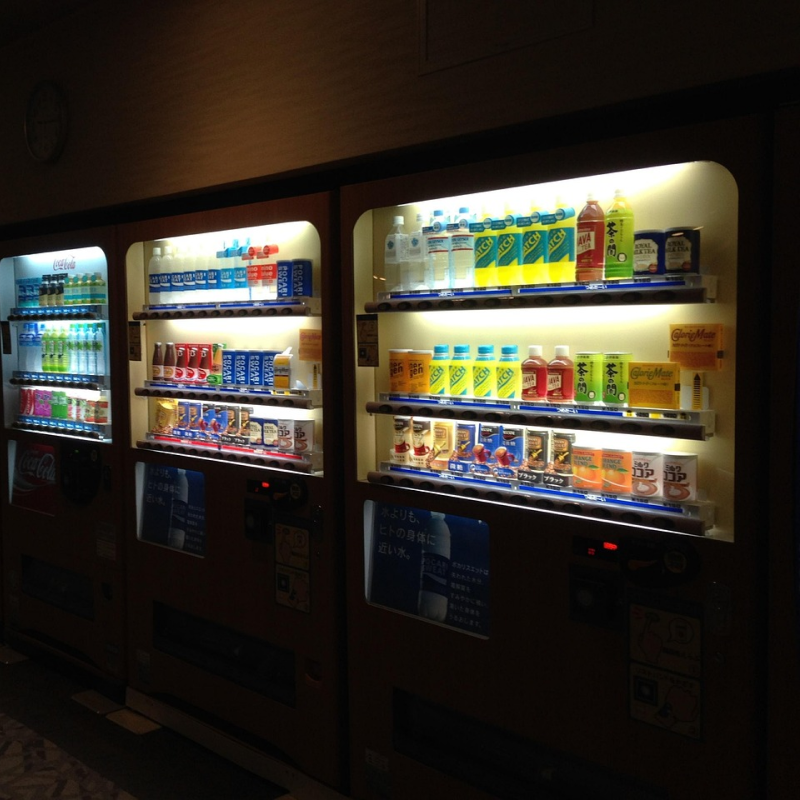
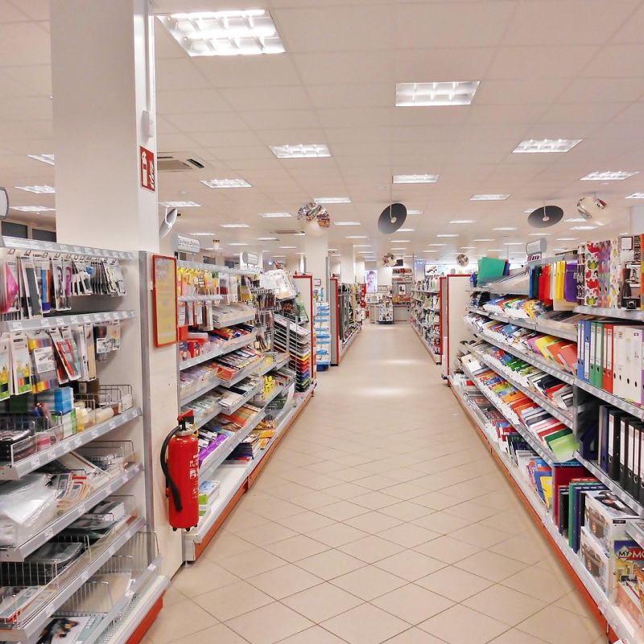
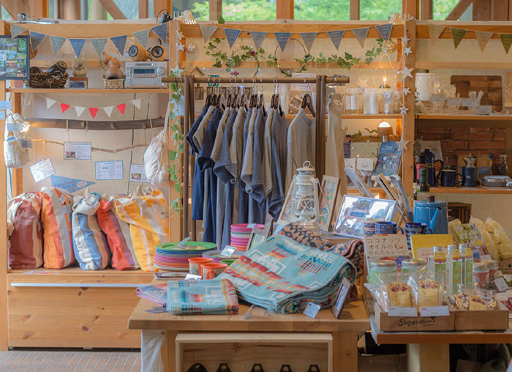

スタッフ不在の夜間や早朝でも
「モノ」も販売できる
自動販売機（自販機）が、
お客様の「買いたい瞬間」を逃さず
おみやげを提供
こんなお悩み
ありませんか？
閉店後や早朝にもおみやげを買いたいお客様がいるのに、スタッフを置けないため、「買い逃し」が多い気がする
レジ要員を増やしたいが、人が採用できない
土日や連休だけ人を増やすのはコスト負担が大きい
レジ周りや通路が狭く、新しいおみやげを置く場所がない
ポップアップや期間限定商品を試したいが、常設棚を増やせない
物販機の特徴
冷蔵スイーツから常温のお菓子、雑貨・キャラグッズまで幅広く商品を販売できるため 人件費を抑えながら、売上とお客様満足度を同時に高めることができます

自動販売機（自販機）は、常温商品だけでなく、冷蔵・保冷が必要な商品にも対応できます。
複数の温度帯に対応したモデルであれば、チルドスイーツ・生菓子・冷凍スイーツ・常温のおみやげまで、多様な商品を1台でまとめて販売できます。
さらに棚の高さや構成を調整できるため、パッケージ形状が異なる商品でも無理なく陳列できます。

自動販売機（自販機）は24時間無人で稼働するため、スタッフ不在の夜間・早朝でも販売が可能です。
繁忙期やイベント時には臨時売場として増設することで、レジ待ちを緩和し、販売チャンスを最大化できます。
物販機による無人販売で、追加の人件費をかけることなく、売上と顧客満足度の向上を両立できます。

コンパクト設計の自動販売機（自販機）なら、通路脇・レジ横・空きスペースなど、限られた場所でも設置が可能です。
これまで活用できていなかったデッドスペースを、購入率の高いサブ売場へと転換できます。
ホテルのフロント横やミュージアムショップのレジ横など、"ついで買い"を促すスポットにも最適です。
コラッピングや装飾によって、施設やキャラクターの世界観に合わせた売場づくりが可能です。
ショーケース仕様の物販機なら、実物をそのまま展示でき、箱菓子やキャラグッズの魅力を視覚的に訴求できます。
入口・駐車場・ロビーなど、屋内・屋外を問わず"人が集まる場所"へ売場を拡張できます。
液晶表示付きの物販機では、英語表示に対応しており、海外のお客様にもストレスのない購入体験を提供できます。
商品説明や操作ガイドを英語化できるほか、動画を流して施設案内やイベント告知を行うことも可能です。
導入事例
物販機ラインアップ
文章が入ります。文章が入ります。文章が入ります。文章が入ります。文章が入ります。文章が入ります。文章が入ります。文章が入ります。文章が入ります。文章が入ります。文章が入ります。文章が入ります。文章が入ります。文章が入ります。文章が入ります。文章が入ります。文章が入ります。文章が入ります。文章が入ります。文章が入ります。文章が入ります。文章が入ります。文章が入ります。文章が入ります。文章が入ります。文章が入ります。文章が入ります。文章が入ります。文章が入ります。文章が入ります。文章が入ります。文章が入ります。文章が入ります。文章が入ります。文章が入ります。文章が入ります。文章が入ります。文章が入ります。文章が入ります。文章が入ります。文章が入ります。文章が入ります。文章が入ります。文章が入ります。文章が入ります。文章が入ります。文章が入ります。文章が入ります。文章が入ります。文章が入ります。文章が入ります。文章が入ります。文章が入ります。文章が入ります。文章が入ります。文章が入ります。文章が入ります。文章が入ります。
ご質問

テキストテキストテキストテキストテキストテキストテキストテキストテキストテキストテキストテキストテキストテキストテキストテキストテキストテキストテキストテキストテキストテキストテキストテキストテキストテキストテキストテキストテキスト